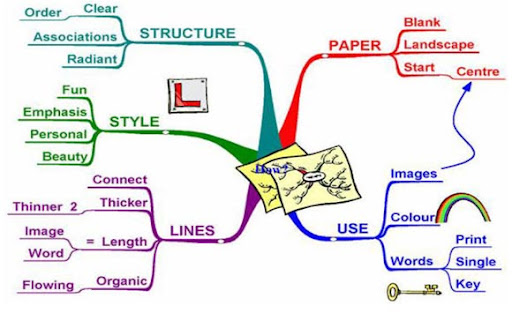

Napravite mapu uma
Strategija koja vam moze pomoci ukoliko ste skloniji vizuelnom predstavljanju gradiva i zelite da imate crtez koji ce vam u svakom momentu omoguciti da ponovite glavne ideje nekog veceg gradiva. Crtanje mape uma je metoda pomocu koje puno informacija moze da se stavi na jedan list papira, ili da se na dobar nacin organizuju beleske. Moguce je cak i celu knjigu sumirati na ovaj nacin, olaksavajuci sebi da se kasnije prisetimo svih glavnih stvari, bez velikih osvrtanja na detalje. Ova metoda razvija i vestinu jasnog definisanja kljucnih pojmova, odvajajuci bitno od nebitnog, sto je veoma vazno pri ucenju obimnijeg gradiva.
Pri pravljenju mape uma najpre se nacrta centar mape uma, koji bi trebalo da predstavlja glavni pojam, tj. crtez glavnog pojma. Centralni crtez treba da bude specifican, zabavan i da sadrzi asocijaciju na kljucni pojam, kako bi ga nas mozak brzo usvojio. Mapa uma u sustini sadrzi asocijacije koje proisticu ili se vezuju za centralnu tacku.
Iz centralne slike se granaju ostale teme, iz kojih mogu polaziti dalji tanji izgranci koji predstavljaju manje vazne pojmove. Mape uma se crtaju u boji kako bi se stvorila iluzija trodimenzionalnosti, koja pomaze da slika ostane duze u secanju. Iz navedenih razloga trebalo bi koristiti minimum tri boje, posto nas mozak cesto lakse pamti crteze i boje od drugih informacija. Iz navedenih razloga potrebno je ukljuciti sto vise slikovitih asocijacija na pojmov koji treba da budu nauceni. Pri tome se preporucuju samo pozitivne asocijacije na date pojmove.
Prilozena mapa uma je mapa koju je sacinio sam tvorac ove metode Toni Buzan. Na ovoj mapi su predstavljene zakonitosti crtanja mape uma.
Svaku granu treba crtati jednom bojom. Reci, crtezi i oznake koje se odnose na tu granu se pisu ili crtaju iznad te grane. One mogu da budu bilo koje boje, a preporucuju se varijacije boja, velicine slova, linija i slika. Nakon sto je nacrtan centralni crtez(u ovom slucaju sama mapa uma), crta se prva grana.
U navedenom primeru iznad prve grane pise se ono sto ona sadrzi (u konkretnom primeru paper-papir). POcetni deo grane je malo deblji u odnosu na svoje izgranke, koji su uvek tanji ka vrhu nego ka cvoru. Izgranci ove grane nas upucuju na to da nam je za crtanje mape uma potreban beli, prazan papir, postavljen horizontalno i da crtanje na njemu pocinjemo od centralnog pojma.
Na sledecoj grani stoji natpis use-koristiti. Autor ove mape nam predlaze da koristimo slike, boje i reci pri crtanju mapa. Prilikom pisanja, slova bi trebalo da budu sampana, ne treba pisati recenice, vec iskljucivo kljucne reci.
Treca grana na kojoj pise lines-linije ukazuje na to kakvim linijama treba crtati grane i izgranke. Grane idu od debljeg kraja ka tanjem, povezane su i sadrze(iskljucivo iznad sebe upisane ili nacrtane) reci i crteze. Slova bi trebalo da se pisu horizontalno.
Sto se tice stila prikazanog na grani sa natpisom style-stil, autor kaze da treba da bude zabavan, naglasen, lican i lep. Bilo bi idealno kada biste razvili svoj licni prepoznatljiv stil, a to se postize vezbanjem. Razvijanjem licnih simbola mozete vrlo lako da predstavite neku ideju u par poteza.
Na poslednjoj grani stoji natpis structure-struktura. Autor preporucuje jasnocu prikaza, upotrebu asocijacija i sistematicnost u pristupu. Prilikom crtanja trebalo bi se truditi da se razvije sistematicnost i rutina. Iz tog razloga, crtanje grana u smeru kazaljke sata se preporucuje kao dobra ideja.
Kada ste prema datim uputstvima sacinili mapu uma i sumirali njome gradivo koje ste zeleli mozete je postaviti na neko vidno mesto, kako biste svaki put kada prolazite pored nje spontano podstakli proces pamcenja i obnavljanja gradiva.
Ukoliko zelite da uvezbate ovu tehniku i upoznate se sa primerima, posetite sledeci sajt: http://www.mindmapart.com/